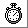

Visual Basic is not an ideal environment in which to do accurate timing. One thing to make sure of when trying to take measurements, is that no other processes are running. Close down all applications other than your program.
Visual Basic provides several time-related facilities. If timings accurate to plus or minus 1 second are satisfactory the Timer function can be used. This returns the number of seconds that have elapsed since 12 midnight. Before using this function, check, and if necessary set, the system time on your PC (this is done by typing time at the DOS prompt). If working late at night, remember that your results will be affected if midnight strikes during a timing experiment!
Below is a simple example of using Timer. The elapsed time since midnight is stored when the start button is clicked and again when the stop button is clicked. Elapsed time between clicking on start and clicking on stop is displayed in the text box. Start and Finish are long (i.e. numeric) private module variables declared in the ‘(General) (Declarations)’ section of a module.
Private start As Long Private finish As Long Private Sub cmdStart_Click () start = Timer End Sub Private Sub cmdStop_Click () finish = Timer text1.Text = finish - start End Sub |
Sometimes, for example if trying to record mouse selection speeds, intervals of less than one second will occur. These cannot be accurately handled in VB, but a good enough approximation can be obtained using the Timer control, which can be found on the ToolBox - it looks like a stop watch .
Place a Timer control on your form (it will not be visible at run time). Set its interval property to 100 (the interval is measured in milliseconds, so this means than any code behind the timer event will be executed every tenth of second). Below are two screens, the left one shows the Timer control at design time and the right screen shows how the window appears at run time. This program measures the elapsed time in tenths of a second from clicking on the ‘Go’ button to clicking on the rectangle (a PictureBox).
Private elapsed As Long ' Private module variable Private Sub cmdGo_Click () elapsed = 0 timer1.Enabled = True End Sub Private Sub Timer1_Timer () elapsed = elapsed + 1 End Sub Private Sub Picture1_Click () timer1.Enabled = False text1.Text = elapsed End Sub
The timer control is particularly useful when you want to do time-related things that do not require absolute precision. For example, in a public walk-up-and-use system you might want to trigger automatically back to the welcome screen if there has been no interaction for about 2 minutes. In a computer-based learning program you might want to offer some sort of help if a user has been looking at a self-assessment question for some time, but has made no response. In interactive games, timers are used to selectively change aspects of the screen, for example to maintain an illusion of animation in a ‘living’ book.
 Menu
Menu